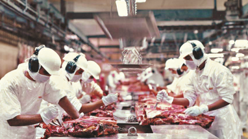
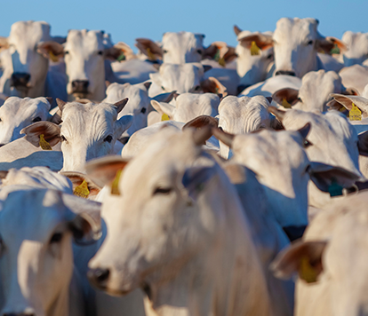

Oportunidades de trabalho com o gado



Os cargos em um frigorifico são de magarefe, desossador, faqueiro, refilador, lombador, serrador, eviscerador, e atordoador com salarios que variam de R$1.402,62 a R$1.593,00.

O valor da arroba do boi esta cotado hoje em R$232,35.